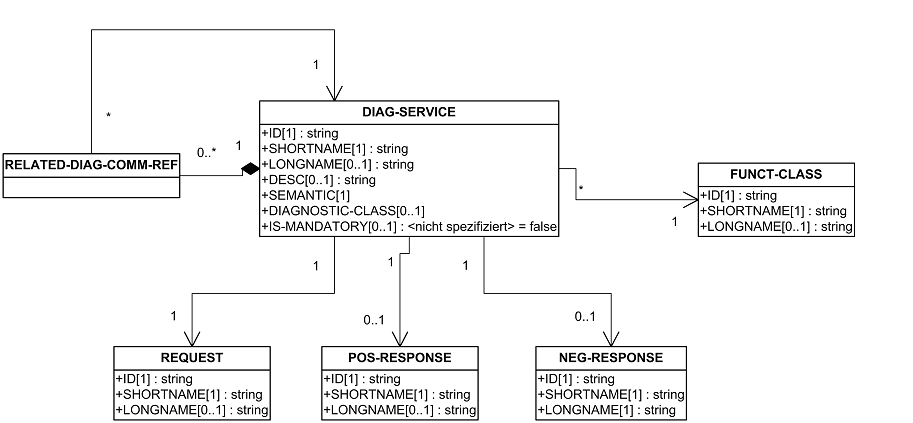
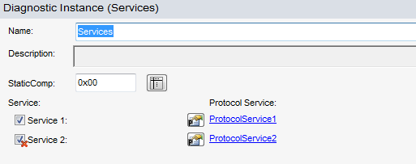
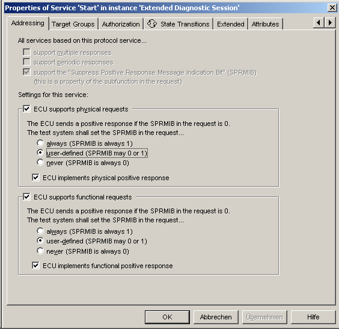
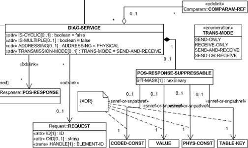
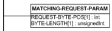
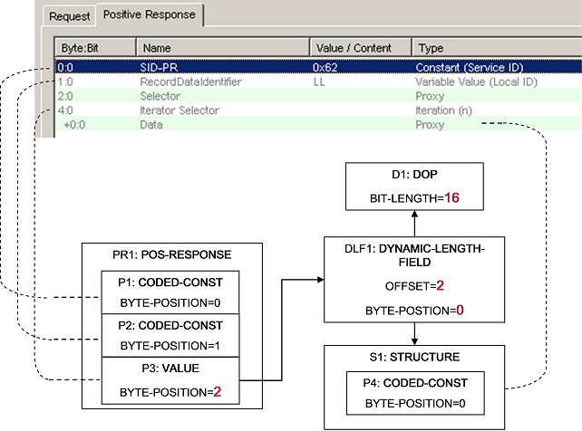
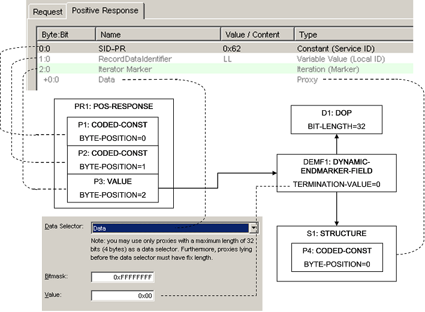
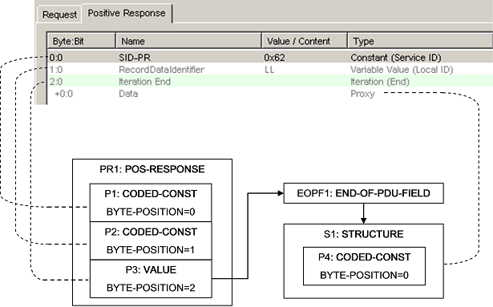

[ODXE-R1080-Service]
A CANdela Service is exported to the ODX element DIAG-SERVICE whereas value inheritance and sharing conditions are always fulfilled. Figure ODX DIAG-SERVICE shows the cardinality of the object relationships which are ensured by the export, i.e. each DIAG-SERVICE has its own REQUEST, POS-RESPONSE and NEG-RESPONSE. The reference to FUNCT-CLASS and the attribute SEMANTIC are set like it is described in chapter 7.1 and 7.2.

Export of ODX DIAG-SERVICE
Services which are only functional adressable can be skipped using the ODXExportOption "SkipPureFunctionalService".
With CANdela 8.2 SP2 it is possible to deactive Services in a Diagnostic instance.

Deactivated Service at Diagnostic Instance
For the ODXExport, those services are skipped. Deactivated Services are not exported to ODX.
With CANdela5.5 the new Service-Property 'ServiceShortCutQualifer/ServiceShortCutName' is used as SHORT-NAME/LONG-NAME.
| DIAG-SERVICE | Value |
|---|---|
| SHORTNAME | ServiceShortCutQualifier |
| LONGNAME | ServiceShortCutName |
Table 11: Short- and Longname of Diag-Service
During migration of documents from 5.0 to 5.5 the Value is calculated by concatenating Service and DiagInstance-Qualifier/Name as done before. In case the Odx-attribute 'DIAG-SERVICE.SHORT-NAME' (see With Template) is set, the value will be used as ServiceShortCutName. The TextId of the ShortCutName is used as TID in ODX.
With 6.0 Release, each CANdela-Service has the property "Semantic". Here the user is able to specify the SEMANTIC of the ODX DIAG-SERVICE directly.
[ODXE-R1080-DiagClass]
Apart from automatically setting the DIAGNOSTIC-CLASS based on the usage (e.g. variant identification), it is also possible to adjust the setting via a CANdela Service Attribute "Diagnostic_Class". The value of the attribute is used as DIAGNOST-CLASS in ODX. Possible Attribute Values are:
With CANdela 6.5 SP1 the data model was enhanced to support specifying the value of the SuppressPositiveResponseMessageIndication-Bit (SPRMIB).

Setting of SPRMIB in CANdela
The ECU will send a POS-RESPONSE if SPRMIB = 0.
The test system will set the SPRMIB in REQUEST as following:
| CANdela-Setting | Value of SPRMIB | ECU sends POS-RESPONSE |
|---|---|---|
| always | 1 | FALSE |
| userdefined | 0 or 1 | TRUE OR FALSE |
| never | 0 | TRUE |
The created ODX DIAG-SERVICEs depends on the setting of the ODX-Export option "ExportPosResponseSupressable"
Number and type of services that have to be exported:
DS = normal DIAG-SERVICE
DSNR = DIAG-SERVICE without POS-RESPONSE
| phys \ func | Always | userdefined | never |
| Always | DS | DS \ DSNR | DS \ DS+DSNR |
| Userdefined | DSNR \ DS | DS+DSNR | DSNR \ DS+DSNR |
| never | DS+DSNR \ DS | DS+DSNR \ DSNR | DSNR |
Table 12: Generation of DIAG-SERVICEs without PRS-Flag
The TABLE below lists the ADDRESSING specified for the created DIAG-SERVICEs
| Phys | Func | DS | DSNR | ||
| setting | SPRMIB | setting | SPRMIB | ||
| always | 1 | always | 1 | X | FUNC-OR-PHYS |
| always | 1 | userdefined | 0 || 1 | FUNC | FUNC-OR-PHYS |
| always | 1 | never | 0 | FUNC | PHYS |
| userdefined | 0 || 1 | always | 1 | PHYS | FUNC-OR-PHYS |
| userdefined | 0 || 1 | userdefined | 0 || 1 | FUNC-OR-PHYS | FUNC-OR-PHYS |
| userdefined | 0 || 1 | never | 0 | FUNC-OR-PHYS | PHYS |
| never | 0 | always | 1 | PHYS | FUNC |
| never | 0 | userdefined | 0 || 1 | FUNC-OR-PHYS | FUNC |
| never | 0 | never | 0 | FUNC-OR-PHYS | X |
| always | 1 | X | X | X | PHYS |
| userdefined | 0 || 1 | X | X | PHYS | PHYS |
| never | 0 | X | X | PHYS | X |
| X | X | always | 1 | X | FUNC |
| X | X | userdefined | 0 || 1 | FUNC | FUNC |
| X | X | never | 0 | FUNC | X |
Table 13: Addressing of DIAG-SERVICEs for SPRMIB-Setting
In case the ODX-Export Option "Export POS-RESPONSE-SUPPRESSABLE" is activated, the POS-RESPONSE-SUPPRESSABLE-Element is generated. Note this element is only available in ODX2.2.0

POS-RESPONSE-SUPPRESSABLE in ODX2.2.0
As the CANdela data model allows to specify the value of the SPRMIB-Bit and ODX not in those cases where the setting between functional and physical DIAG-SERVICEs differ, two DIAG-SERVICEs have to be created.
The number of services that have to be exported is listed below:
| phys \ func | always | Userdefined | never |
| always | 1 | 2 | 2 |
| userdefined | 2 | 1 | 2 |
| never | 2 | 2 | 1 |
Table 14: Creation of DIAG-SERVICEs with PRS-Flag
The following TABLE lists in which cases a POS-RESPONSE-SUPPRESSABLE-Element is generated (PRS-FLAG).
| Phys | Func | 1. DIAG-SERVICE | 2. DIAG-SERVICE | ||||
| Setting | SPRMIB | Setting | SPRMIB | Addressing | PRS-Flag | Addressing | PRS-Flag |
| always | 1 | always | 1 | FUNC-OR-PHYS | - | X | |
| userdefined | 0 || 1 | userdefined | 0 || 1 | FUNC-OR-PHYS | PRS | X | |
| never | 0 | never | 0 | FUNC-OR-PHYS | - | X | |
| userdefined | 0 || 1 | always | 1 | PHYS | PRS | FUNC | - |
| userdefined | 0 || 1 | never | 0 | PHYS | PRS | FUNC | - |
| always | 1 | userdefined | 0 || 1 | PHYS | - | FUNC | PRS |
| never | 0 | userdefined | 0 || 1 | PHYS | - | FUNC | PRS |
| never | 0 | always | 1 | PHYS | - | FUNC | - |
| always | 1 | never | 0 | PHYS | - | FUNC | - |
| always | 1 | X | X | PHYS | - | X | |
| userdefined | 0 || 1 | X | X | PHYS | PRS | X | |
| never | 0 | X | X | PHYS | - | X | |
| X | X | always | 1 | FUNC | - | X | |
| X | X | userdefined | 0 || 1 | FUNC | PRS | X | |
| X | X | never | 0 | FUNC | - | X |
Table 15: Usage of PRS-Flag for DIAG-SERVICEs
This feature is available since CANdelaStudio 4.0 SP3
IS-MANDATORY is exported for DIAG-SERVICES exported to the BASE-VARIANT depending on the following properties:
'DIAG-SERVICE.IS-MANDATORY=true' is exported when the following conditions apply:
(DiagInstance.IsRequired==true) && (DiagInstance.IsActivationModifiable==true)
&& (DiagServiceTemplate.IsRequired==true || Service.IsRequired==true)
Since CANdela5.5 IS-MANDATORY is only exported in case the primary and secondary properties of the DiagInstance are not modifiable. Otherwise the Service could potentially be overwritten in an ECU-VARIANT.
With CANdelaStudio 6.0 SP1 it is possible to modify communication parameters at Service -- level. This will be exported as COMPARAM-REF at the corresponding DIAG-SERVICE.
With CANdela 7.5 it is possible to define that certain services are available only via specific interfaces. This is expressed in ODX via PROTOCOL-SNREFs at DIAG-COMM. In case a DIAG-SERVICE is only available on a specific interface, the ODX-Export generates a PROTOCOL-SNREF to the PROTOCOL-LAYER generated for this interface.
Usually, the DIAG-SERIVCE SHORT-NAME/LONG-NAME + prefix is used for calculating the SHORT-NAME/LONG-NAME.
The default assembling of REQUEST.SHORTNAME and REQUEST.LONGNAME is as follows:
| Default prefix for SHORTNAME prefix_RQ_SN | "RQ_" |
| Default prefix for LONGNAME prefix_RQ_LN | "RQ " |
Table 16: Default prefix for Short- and Longname of Request
| REQUEST.SHORTNAME := prefix_RQ_SN + DIAG-SERVICE.SHORTNAME |
| REQUEST.LONGNAME := prefix_RQ_LN + DIAG-SERVICE.LONGNAME |
Table 17: Short- and Longname of Request
Since CANdela 7.1 the ODXExport supports also services without Request. In older versions those Services were skipped by the ODXExport.
The default assembling of POS-RESPONSE.SHORTNAME and POS-RESPONSE.LONGNAME is as follows:
| Default prefix for SHORTNAME prefix_PR_SN | "PR_" |
| Default prefix for LONGNAME prefix_PR_LN | "PR " |
Table 18: Default prefix for Short- and Longname of Pos-Response
| POS-RESPONSE.SHORTNAME := prefix_PR_SN + DIAG-SERVICE.SHORTNAME |
| POS-RESPONSE.LONGNAME := prefix_PR_LN + DIAG-SERVICE.LONGNAME |
Table 19: Short- and Longname of Pos-Response
The default assembling of NEG-RESPONSE.SHORTNAME and POS-RESPONSE.LONGNAME is as follows:
| Default prefix for SHORTNAME prefix_NR_SN | "NR_" |
| Default prefix for LONGNAME prefix_NR_LN | "NR " |
Table 20: Default prefix for Short- and Longname of Neg-Response
| NEG-RESPONSE.SHORTNAME := prefix_NR_SN + DIAG-SERVICE.SHORTNAME |
| NEG-RESPONSE.LONGNAME := prefix_NR_LN + DIAG-SERVICE.LONGNAME |
Table 21: Short- and Longname of Neg-Response
Negative response codes are exported as DATA-OBJECT-PROP with COMPU-METHOD of category TEXT-TABLE. The text table covers the negative response codes of the service and of the corresponding session if available.
A CANdela NRC data object that does not contain NRCs is exported as RESERVED PARAM to ODX. Reason: In ODX it is not possible to export an empty text table.
For the NRC 0xE3, the NRC is followed by two more bytes. In CANdela this is expressed by a ContentComp with MandatoryAtRuntime-flag set to false. In ODX this is represented using a MUX, where the DEFAULT-CASE has no STRUCUTRE-REF and the CASE for 0xE3 points to the STRUCTURE generated from the ContentComp.
[ODXE-R1080-ExportService]
To improve import/export roundtrip the Names and Qualifiers of the CANdela-Service and DiagnosticInstance are exported optionally to SDGs at the DIAG-SERVICE since CANdela Studio 5.0SP1. The Structure is given below.
Since CANdela 5.0 SP2 the analogue information is also exported for CANdela-Jobs.
[ODXE-R1080-Combined]
In case the Option "CreateAdditionalServiceForCombinedDIDs" is set, the ODX-Export creates an additional DIAG-SERVICE per Diagnostic-Class which contains an Iteration in Request and Response where the Identifier and corresponding data is repeated.
In CANdela the grammar of a Service is described by a ProtocolService. A ProtocolService consists of max. three primitives and a primitive consists of components. Apart from the primitive components "Proxy", "Fixed data" and components within an Iteration such components are exported to ODX as PARAMs.
Note: CODED-CONST and RESERVED PARAMs have no DOP-REF in ODX. A CODED-CONST PARAM has a data type description for the coded value given by DIAG-CODED-TYPE.
Usually a const component with specification "Service ID" is exported as PARAM of type CODED-CONST with SEMANTIC SERVICE-ID. Only the second const component with specification "Service ID" of a NegResponse is exported with SEMANTIC SERVICEIDRQ.
| CANdela component specification | PARAM.SEMANTIC |
|---|---|
| Subfunction | SUBFUNCTION |
| Local-ID | LOCAL-ID |
| Status | Status |
| Identifier | ID |
| Data | DATA |
Table 22: Param Semantic
[ODXE-R1080-Matching]

MATCHING-REQUEST-PARAM
In case the Option "Create MATCHING-REQUEST-PARAM" is activated, in the POS-RESPONSE an additional MATCHING-REQUEST-PARAM is created at the same byte-position where the PARAM specifying the Subfunction / Local-ID is located.
| CANdela component | ODX COMPLEX-DOP for PARAM |
|---|---|
| Iteration (Selector) | DYNAMIC-LENGTH-FIELD |
| Iteration (Marker) | DYNAMIC-ENDMARKER-FIELD |
| Iteration (End) | END-OF-PDU-FIELD |
Table 23: Mapping of Complex-Dops
Since CANdela Studio 4.0 SP4 a PARAM of type VALUE and a complex DOP of type DYNAMIC-LENGTH-FIELD, DYNAMIC-END-MARKER-FIELD or END-OF-PDU-FIELD are only generated if the comps contained in the CANdela IterComp are not empty. Empty IterComps are skipped from the export.

Mapping of Iterator to DYNAMIC-LENGTH-FIELD
The repeated content in CANdela ('Data') is mapped to a STRUCTURE in ODX. The Iterator Selector points to a Proxy ('Selector') that determines the number of iterations. When this is exported to ODX, the DYNAMIC-LENGTH-FIELD is positioned at the position of the Selector in CANdela. The actual start of the repeated content is described using DYNAMIC-LENGTH-FIELD.OFFSET.

Mapping of Iterator to DYNAMIC-ENDMARKER-FIELD
The Iterator (Marker) is mapped to a DYNAMIC-ENDMARKER-FIELD. The Value when the iteration has to stop is given by DYNAMIC-ENDMARKER-FIELD.TERMINATION-VALUE. The reference to the Data-Selector given in CANdela is not represented in ODX.

Mapping of Iterator to END-OF-PDU-FIELD
The Iterator(End) is mapped to END-OF-PDU-FIELD. The repeated content is mapped to an ODX-STRUCTURE. No further mapping is required.
Export of data objects and bit fields is explained in the chapter Data objects and bitfields.
In CANdelaStudio 4.0 SP3 and earlier SimpleProxyComps with destiny='any' were exported as RESERVED.
Since CANdelaStudio 4.0 SP4 Simple ProxcyComps with destiny='any' are exported as VALUE referencing a DOP with COMPU-METHOD of type 'IDENTIY'. DIAG-CODED-TYPE, PHYSICAL-TYPE are defined according to the following table:
CANdela Length |
ODX DIAG-CODED-TYPE |
ODX PHYSICAL-TYPE |
|---|---|---|
| fix | STANDARD-LENGTH-TYPE BASE-DATA-TYPE = A_UINT32 |
BASE-DATA-TYPE=A_UIN T32 DISPLAY-RADIX=HEX |
| variable | MIN-MAX-LENGTH-TYPE BASE-DATA-TYPE=A_BYT EFIELD TERMINATION=END-OF-PD U |
BASE-DATA-TYPE=A_BYT EFIELD |
Table 24: DIAG-CODED-TYPE and PHYSICAL-TYPE of VALUEs
SimpleProxyComps with destiny='any' that are referenced as selector by a NumeratorIterComp are not exported as VALUE since they are handled in the DYNAMIC-LENGTH-FILED resulting from the NumeratorIter.
A DOP of the required bit length is generated if not available.